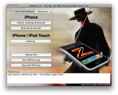
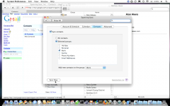

Apple iPhone vs Google Gmail en Calendar
woensdag 7 mei 2008
Deze week kreeg ik twee iPhones in handen. “Om te kraken, alstublieft.”
Zoals zoveel andere exemplaren waren ze in de States gekocht en in ons relatief iPhonevrij Belgenland binnengesmokkeld. Zo’n 10.000 zouden er hier al in omloop zijn, las ik onlangs.
Kraken en genieten


Over het ding zelf ga ik niet te veel schrijven: reviews zijn er genoeg te vinden over deze eerste telefoon van Apple. Laat mij alleen zeggen dat ik erg onder de indruk was van de leesbaarheid van het schermpje. Zonnend in de tuinzetel met één vingertje De Standaard doorbladeren was een bijzondere ervaring. Maar ook de interactie tussen één of twee vingers en de interface is gewoon een digitaal mirakel. Hier zal niemand over moeilijk doen: wat Apple hier gedaan heeft is briljant.
Synchronisatie via iTunes
De iPhone gebruikt uitsluitend iTunes om gegevens van je computer te halen: foto’s, bookmarks, muziek, agenda, e-mailinstellingen, etc. Veruit het belangrijkste hiervan zijn de contactpersonen omdat de iPhone hier de telefoonnummers uit destilleert, die je natuurlijk heel vaak gaat gebruiken. Die contacts kunnen komen uit Outlook (Express), Address Book of Entourage (geen Thunderbird!). Voor veel mensen zal dit dus het eerste werk worden als ze een iPhone kopen: hun adresboek uitmesten, alle telefoonnummers uit hun ‘oude’ gsm halen en er een contactpersoon voor aanmaken in hun e-mailprogramma, om ze daarna naar de iPhone te synchroniseren.
Ik hou van Apple. Maar ik hou evenzeer van Google. Ik ben een Gmail fan van het eerste uur, een verslaafde Reader‘er en hopeloos verloren zonder mijn Google Calendar. Voor het beheer van al mijn domeinnamen is Google Apps ingeschakeld. Nooit gebruik ik nog een lokaal e-mailprogramma, adresboek of agenda. Die gebeurtenissen regel ik voor 100% online (mijn contacts zitten bijvoorbeeld alleen in Gmail). Maar hoe krijg je die online gegevens dan in de iPhone? Er zijn verschillende scenario’s mogelijk…
Synchronisatiescenario’s voor Google fanboys
0 — Het ideale scenario — laat me daarmee beginnen — bestaat niet. Althans voorlopig. In dat scenario zou iTunes en direct het adresboek van Gmail en de agenda’s van Google Calendar synchroniseren met de iPhone. Dat lukt trouwens nu al voor gebruikers van Yahoo! Mail, the lucky bastards. Of je in dit scenario de ingebouwde email en kalender apps van de iPhone gebruikt of alles Safarigewijs online doet via de iPhoneinterface die Google speciaal heeft ontworpen, maakt eigenlijk niet veel uit. Af en toe je iPhone thuis syncen et voila!
1 — Het desktop scenario zou betekenen dat je enkel de software op je computer gebruikt: email en contactbeheer in Outlook (Express), Mail, Address Book of Entourage, je agenda in Outlook of iCal. iTunes synchroniseert alles moeiteloos. Het grote nadeel van dit scenario is dat je contacts en agenda niet meer online worden opgeslagen en dat je niet meer via de aangename en innovatieve Gmail interface kan werken, noch op je iPhone, noch op je desktop. Bovendien word je op Windows gedwongen om met Outlook te werken (een drrrraak van een programma, een onding, een f… rustig blijven, Fre).
2 — Het online scenario — mijn favoriet — houdt in dat je ondanks alles volledig online blijft werken via Gmail en Google Calendar, zowel op je computer thuis als op je iPhone. Het probleem van dit scenario is dat contacts in Gmail en afspraken in Google Calendar niet meer kunnen gesynchroniseerd worden met de iPhone; iTunes kan er immers niet aan. Weg telefoonboek!


3 — Het hybride scenario. Voor wie de vorige drie scenario’s niet ingewikkeld genoegd vindt, kan het een en ander gecombineerd worden. Zo zou je op je desktop echte programma’s kunnen gebruiken, maar op je iPhone enkel de webinterface. Of omgekeerd. Sterkte.
Apple, aanhoort ons!
Nerds love Apple. Dat is geen geheim. Nerds love Google. Dat is ook bewezen.
Beste Apple, zou u een klein gebaar willen maken naar de duizenden computerliefhebbers die u in leven gehouden hebben en groot hebben gemaakt? Ik heb het niet over de miljoenen iPod en iPhone zombies die de aarde nu en straks bevolken, zij die denken dat een computer hetzelfde is als een bak elektronica uit de Makro met een prehistorisch besturingssysteem. Ik heb het over ons, uw oude vrienden. Weet u nog?
Ok, dat is er een beetje over.
Apple, voeg gewoon Gmail en Google Calendar synchronisatie toe aan iTunes. Dank u.
Update (28 mei 2008): Dank u, Apple! (Zie je, Steve leest mijn weblog ;-)

Roel op 7 mei 2008
Ik heb een tijdje geleden even een iPhone in gebruik gezien, en was ook onder de indruk van de interface. En het is ook heel logisch dat ze er telefoon-functionaliteit in hebben gebouwd. (Alles-in-een verkoopt, ten slotte). Maar ik denk dat ik toch zou gaan voor een iPod Touch, dan heb je dezelfde web functionaliteit maar kan ik gewoon blijven bellen met mijn compacte mobiel.
Dat is natuurlijk pas een optie als het perfect samenwerkt met Google’s web applicaties! :)